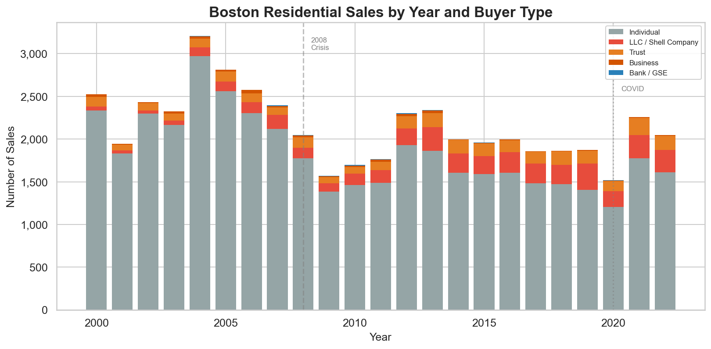
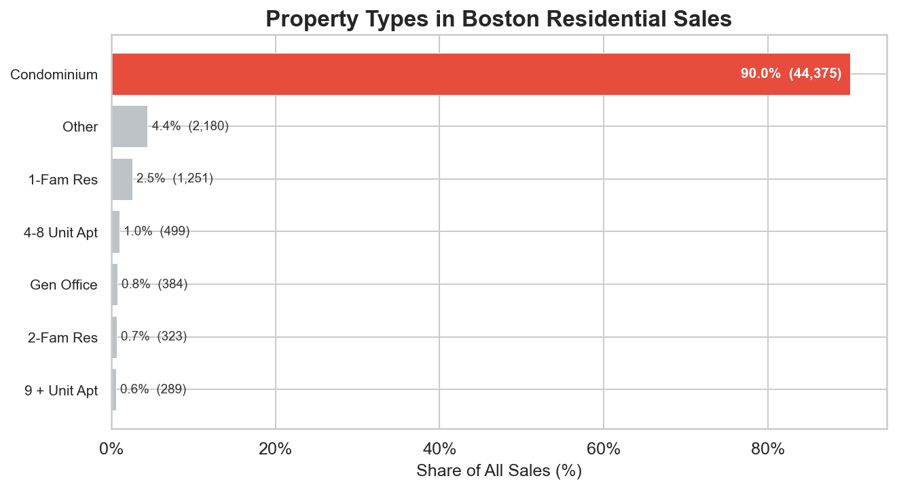
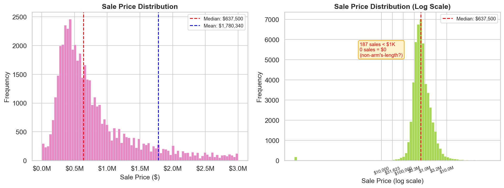
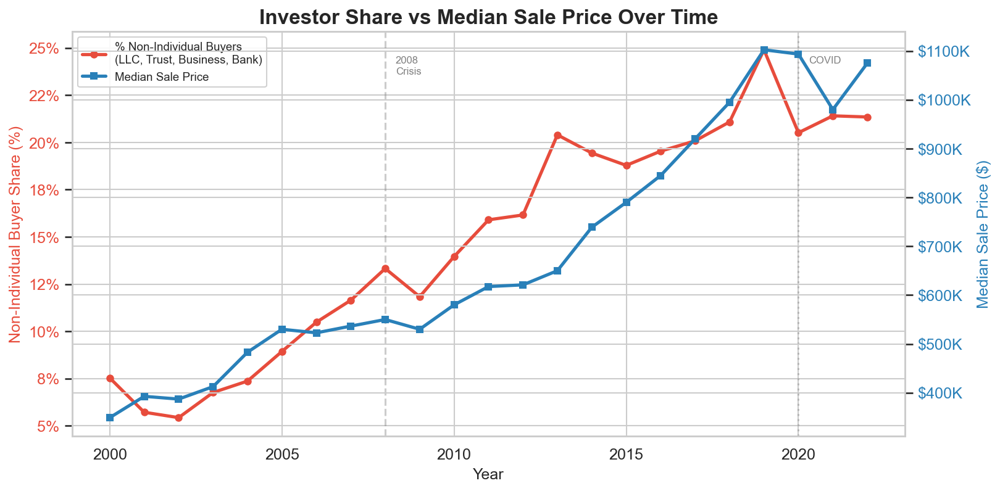
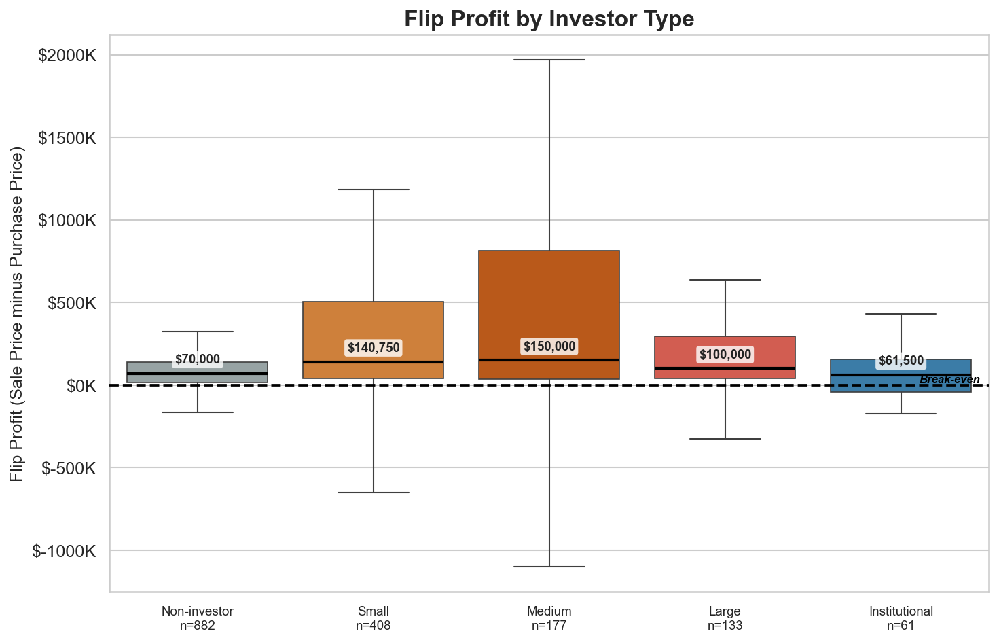
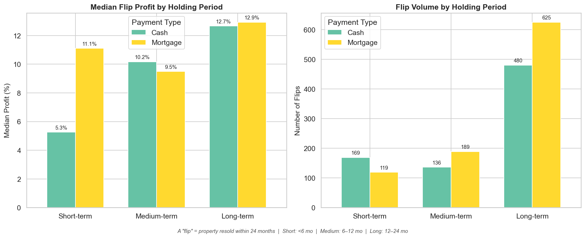
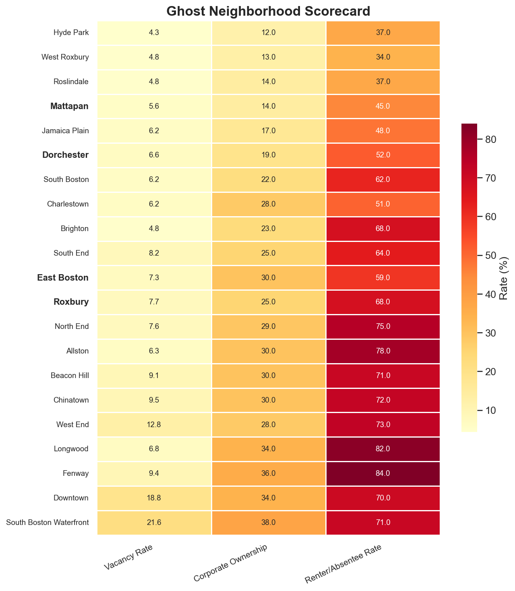
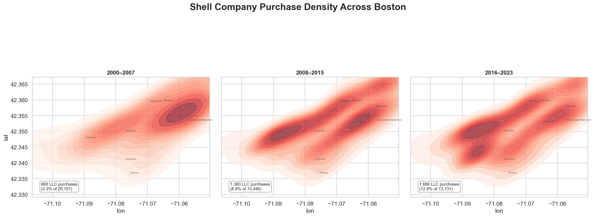
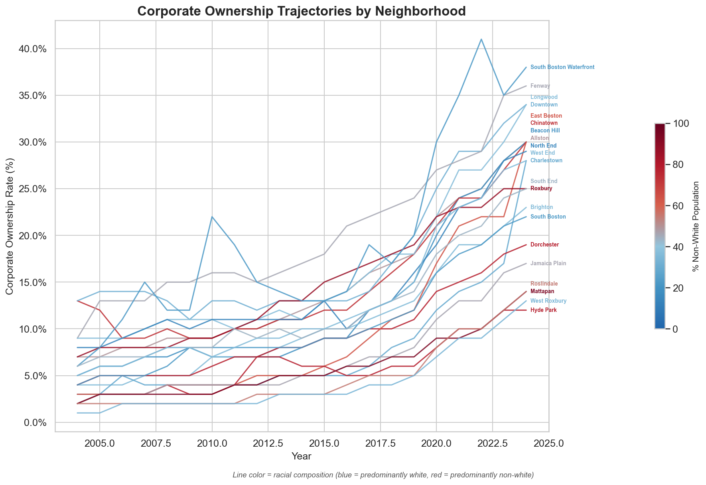
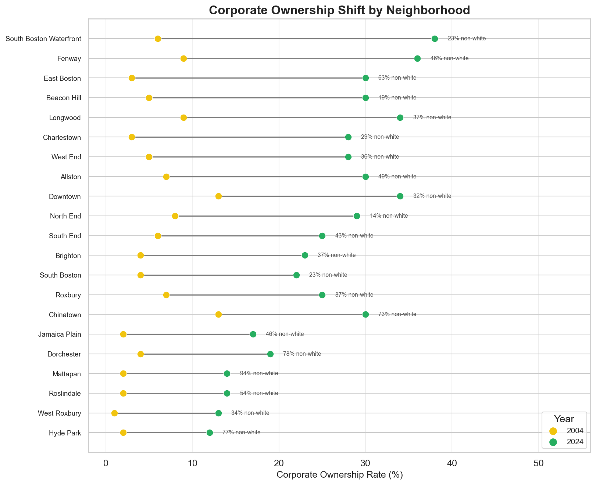

Subtheme: Speculation
Overall Analysis Questions
-
To what extent has Boston's housing market been financialized, and who profits from treating homes as investment vehicles rather than places to live?
Reading MAPC's Homes for Profit (2023) was the first time I saw hard numbers on how much of Boston's housing market is controlled by investors rather than residents. The finding that investor purchases grew from 20% to over 30% of all sales felt staggering. Then ProPublica's When Private Equity Becomes Your Landlord described private equity firms explicitly targeting 20% annual returns on residential property, and the Boston Globe's Towers of Wealth (2024) revealed that in some of Boston's most expensive buildings, only a third of owners actually live there. As a student in a city where housing costs dominate every conversation, I wanted to understand the mechanics behind this shift: who exactly is buying, how are they making money, and how much of the market has tipped from serving residents to serving capital?
-
Where are Boston's "ghost neighborhoods," areas where shell company ownership and vacancy are high while owner occupancy is low, and which communities are most affected?
The Boston Globe's Towers of Wealth investigation (2024) coined the image of luxury condos as "safety-deposit boxes in the sky," and that stuck with me because it describes something I have seen walking through the Seaport: brand-new towers with dark windows at night, lobbies with no foot traffic, neighborhoods that feel built for wealth storage rather than daily life. I wanted to test whether this hollowed-out feeling is just anecdotal or whether the data confirms it, and more importantly, whether the pattern extends beyond luxury enclaves into working-class neighborhoods where the consequences of vacancy and absentee ownership are far more damaging.
-
What is the relationship between the financialization of Boston's housing stock and the racial composition of its neighborhoods, and are the mechanisms different in white vs non-white communities?
MAPC's equity framework in Homes for Profit (2023) names BIPOC communities as disproportionately harmed by speculation, and that matches stories I have heard from friends in Dorchester and East Boston about buildings being bought up and rents spiking overnight. But looking at the raw data, the neighborhoods with the highest corporate ownership, like the Seaport and Fenway, are predominantly white. That tension between lived experience and aggregate statistics made me want to dig deeper: is financialization the same phenomenon in every neighborhood, or does it operate through different mechanisms depending on who lives there?
Data Overview & Quality

The bar chart shows clear cyclical patterns in Boston's residential sales. Transactions rise through the early 2000s, peak around 2004, and then decline sharply during the 2008 financial crisis, with an even steeper drop in 2009. The market gradually recovers and stabilizes before experiencing a shorter, less severe dip during the COVID-19 pandemic, followed by a strong rebound in 2021. Overall, sales respond to major economic shocks but tend to recover within a few years.
The composition of buyers changes noticeably over time. In the early 2000s, the bars appear almost entirely gray, reflecting a market dominated by individual buyers. Over time, the bars become more layered, as LLCs (red) and trusts (orange) make up a growing share of transactions, signaling increasing professionalization of the housing market. Brief blue segments between 2008 and 2012 represent banks and government-sponsored enterprises taking back foreclosed properties during the crisis. After 2013, this blue largely disappears, indicating that bank repossessions become rare in the modern Boston market.


Question 1: Financialization & Profit

This chart overlays the percentage of residential purchases made by non-individual buyers with the annual median sale price to test whether rising investor participation corresponds with price escalation. Over nearly two decades, the two lines track each other closely. Since 2000, investor share has increased from roughly 8% to over 20%, while the median sale price has risen from about $349,000 to more than $1 million. Notably, investor share appears to rise ahead of price growth in the post-2008 recovery and again after COVID-19, suggesting that institutional demand may help drive price increases rather than simply follow them. While correlation does not prove causation, the strength and persistence of this relationship are consistent with the hypothesis that investor activity is structurally linked to Boston's long-term housing price growth.
This raised a follow-up question: if investors are linked to price growth, who profits most from flipping? The next figure investigates how flip gains differ across investor types.

Seeing that medium investors profit the most per flip surprised me. I wanted to understand whether these gains come from quick turnarounds or longer holds, and whether cash or mortgage financing matters.

The first chart presents median flip profit percentages and shows a clear pattern: long-term flips (12 to 24 months) are the most profitable, peaking at 12.9% for mortgage-backed deals. While longer holds generally yield higher returns, mortgage flips dip slightly in the medium term (9.5%). Cash buyers perform worst in short-term flips (5.3%) but see returns nearly double after six months. Overall, mortgage financing outperforms cash at both the shortest and longest horizons.
The second chart shifts from profitability to volume. Long-term flips overwhelmingly dominate the market, with more than 1,100 transactions. Short-term flips rely more heavily on cash, but medium and long-term deals are primarily mortgage-financed. Together, the charts show that the stereotypical "quick cash flip" is neither the most common nor the most profitable strategy. Investors favor a leveraged, longer-term approach to capture appreciation rather than quick, low-margin turnover.
Question 2: Ghost Neighborhoods

The scorecard shows where ghost neighborhoods are today, but I wanted to know whether this is a recent phenomenon or a long-developing trend. The next figure maps the geographic expansion of shell company purchasing over three eras.

This visualization uses Kernel Density Estimation (KDE) to transform individual LLC and shell-company purchases into a continuous heat surface, revealing where investor activity clusters across Boston. Darker red areas indicate higher concentrations of corporate acquisitions. Dividing into three periods, 2000 to 2007, 2008 to 2015, and 2016 to 2023, traces the geographic evolution of financialization from a contained luxury-market strategy to a citywide force.
In the early 2000s, LLC purchases were limited and concentrated in Downtown and Beacon Hill, accounting for just 3.3% of sales. After the 2008 housing crisis, activity intensified and expanded, more than doubling in share as it spread into the Seaport and East Boston. In the most recent period, corporate buying reached its widest footprint and highest intensity (12.8% of purchases), pushing deeper into Roxbury, Dorchester, and Jamaica Plain. The momentum is now directed toward historically working-class neighborhoods, where the social stakes are far greater.
Question 3: Race & Financialization

This line chart shows how corporate ownership rates have changed across Boston neighborhoods from 2004 to 2024. Each line represents a neighborhood, and the height of the line indicates the share of residential properties owned by LLCs, trusts, or other corporate entities rather than individuals. The lines are color-coded by racial composition: blue lines represent predominantly white neighborhoods, while red lines represent majority non-white neighborhoods.
Most of the highest and fastest-rising lines are blue. South Boston Waterfront shows the steepest increase, climbing from roughly 6% to nearly 38% corporate ownership, with Fenway, Beacon Hill, and Charlestown following similar upward trends. Meanwhile, many red lines sit lower on the chart but trend steadily upward, indicating quieter yet persistent growth in majority non-white neighborhoods such as Dorchester, Roxbury, and Mattapan.
The trajectory chart made me want to see the total magnitude of change for each neighborhood side by side, rather than tracking lines over time. The next figure compares each neighborhood's starting and ending corporate ownership rates directly.

This dumbbell chart shows each neighborhood's 20-year shift in corporate ownership, comparing 2004 to 2024. Each row displays a yellow dot (2004) and a green dot (2024). Neighborhoods are sorted from largest to smallest increase, and racial composition is labeled alongside each name.
South Boston Waterfront jumps by roughly 32 percentage points, followed by Fenway and East Boston. These large gaps between dots indicate rapid transformation into corporate-dominated housing markets. East Boston stands out as the only majority non-white neighborhood among the fastest-growing areas.
In the lower half of the chart, majority non-white neighborhoods such as Mattapan, Roxbury, and Dorchester show smaller but steady increases, typically 5 to 9 percentage points. They represent meaningful changes in communities that began with low corporate ownership and contain much of the city's remaining unsubsidized affordable housing.
Summary
We begin with the overall market structure. The stacked bar chart (figure 1) shows that Boston residential sales have shifted from being overwhelmingly individual driven to a market where LLCs trusts and other corporate entities now account for more than 20 percent of purchases with the sharpest growth occurring after the 2008 financial crisis. The property type breakdown (figure 2) shows that about 90 percent of transactions are condominiums making condos the primary vehicle for speculation. The price distribution (figure 3) reveals a heavily right skewed market centered around 637000 dollars along with clusters of unusually low value transfers that may reflect non arm length transactions.
We then examine how financialization operates within these properties. The dual axis chart (figure 4) shows investor share and median sale price rising together over two decades with investor activity appearing to move ahead of price growth after 2008 and again during the COVID era surge. The flip profit box plot (figure 5) finds that medium sized investors extract the highest median per flip profits at 150000 dollars more than double the gains of individual homeowners. The holding period analysis (figure 6) shows that long term mortgage financed flips dominate both in volume and profitability challenging the stereotype of the quick cash flip.
At the neighborhood level the Ghost Neighborhood scorecard (figure 7) ranks communities by vacancy corporate ownership and absentee rates identifying South Boston Waterfront and the West End as the most hollowed out areas. The KDE density map (figure 8) shows shell company purchasing expanding from a tight downtown cluster in the early 2000s into a citywide pattern by 2016 to 2023 reaching into Roxbury Dorchester and Jamaica Plain.
The corporate ownership trajectory chart (figure 9) shows the steepest increases in predominantly white neighborhoods such as the Seaport Fenway and Beacon Hill while majority non white neighborhoods show slower but steady growth. The dumbbell chart (figure 10) confirms that every neighborhood has shifted toward higher corporate ownership over twenty years with South Boston Waterfront leading at a 32 percentage point increase and working class communities of color showing smaller but meaningful gains. Overall the findings point to a citywide restructuring of Boston housing market driven by corporate acquisition leverage and long term asset holding strategies.
Limitations
This analysis has important limitations. First 90 percent of the residential sales data consists of condominiums. As a result the study largely misses multi family rental buildings which are often where displacement pressures are most severe. A corporate buyer acquiring a triple decker in Dorchester, for example, and raising rents does not appear in the same way as a condominium flip. Second neighborhood level aggregation masks internal variation. Dorchester is large and diverse and averaging corporate ownership across the entire neighborhood can hide the fact that some blocks may be heavily corporatized while others remain primarily owner occupied.
There are also methodological cautions. Correlation is not causation, so the strong relationship between investor share and price growth in (figure 4) may be influenced by broader forces such as low interest rates population growth or housing supply constraints. We cannot claim that investors directly cause prices to rise. Furthermore, flip detection relies on resale matching within the dataset. If a property was purchased before 2000 or sold after 2023 the flip will not appear and the 24 month window is an analytical choice that excludes slightly longer resales. Finally vacancy is just a snapshot, and a unit recorded as vacant could be under renovation between tenants or temporarily empty rather than a true ghost unit.